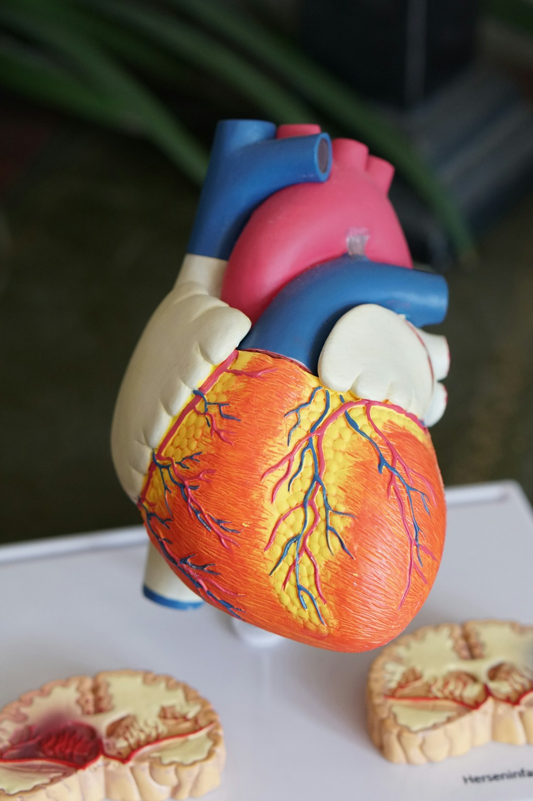

Data foundation
The manuscript model was trained and internally tested using NHANES data, then externally validated using KNHANES data. It predicts three clinically meaningful categories rather than a binary endpoint.
This research calculator is optimized for desktop review. Please open it on a laptop or desktop computer.
Machine learning screening tool
OsteoML presents a validated three-class prediction framework for distinguishing normal bone status, osteopenia, and osteoporosis using routinely available clinical and laboratory variables.
Research-use interface. Predictions are intended to support screening discussion and do not replace DXA testing or clinical judgement.

Evidence
The manuscript model was trained and internally tested using NHANES data, then externally validated using KNHANES data. It predicts three clinically meaningful categories rather than a binary endpoint.
The final model is a stacking classifier combining ExtraTrees, GradientBoosting, Bagging, LightGBM, and XGBoost through a logistic regression meta-learner.
Compared with OST, the machine-learning model improved overall discrimination and exact three-class classification. OST remains a useful high-sensitivity screening comparator for osteoporosis.
Calculator
This website calls the model service when available and otherwise shows a browser-side preview for interface testing.
Methods
OsteoML estimates bone-status risk categories from routinely available variables and presents local feature explanations for each submitted prediction. The interface is intended for manuscript review and research communication. It should not be used to diagnose osteoporosis or replace DXA testing.